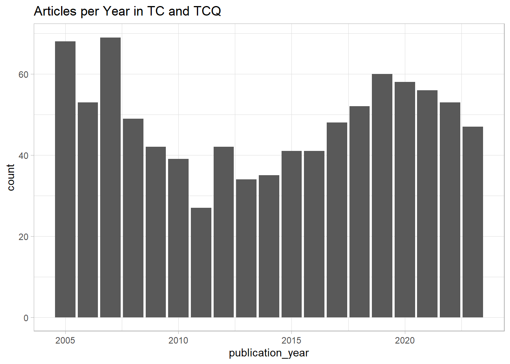
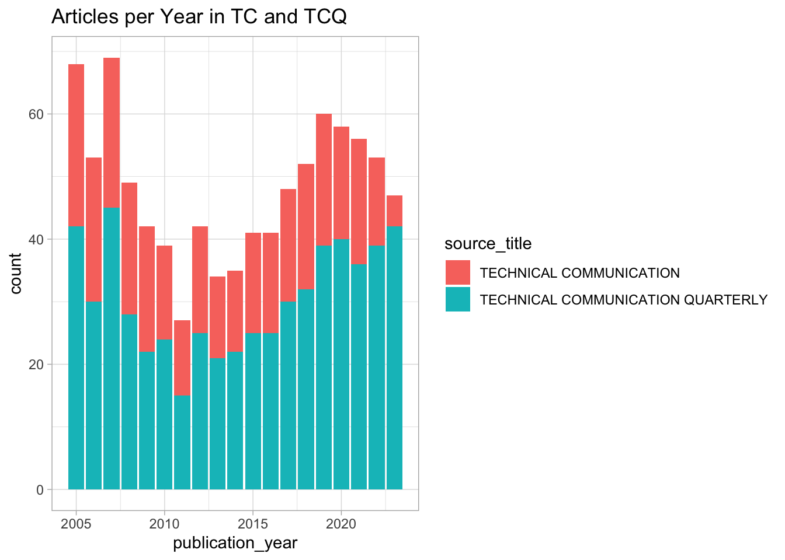
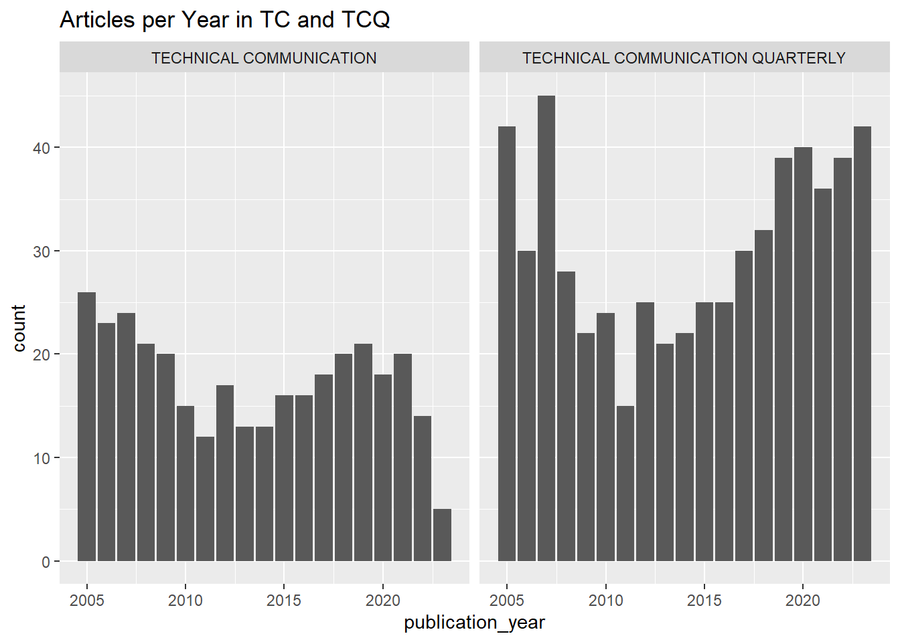
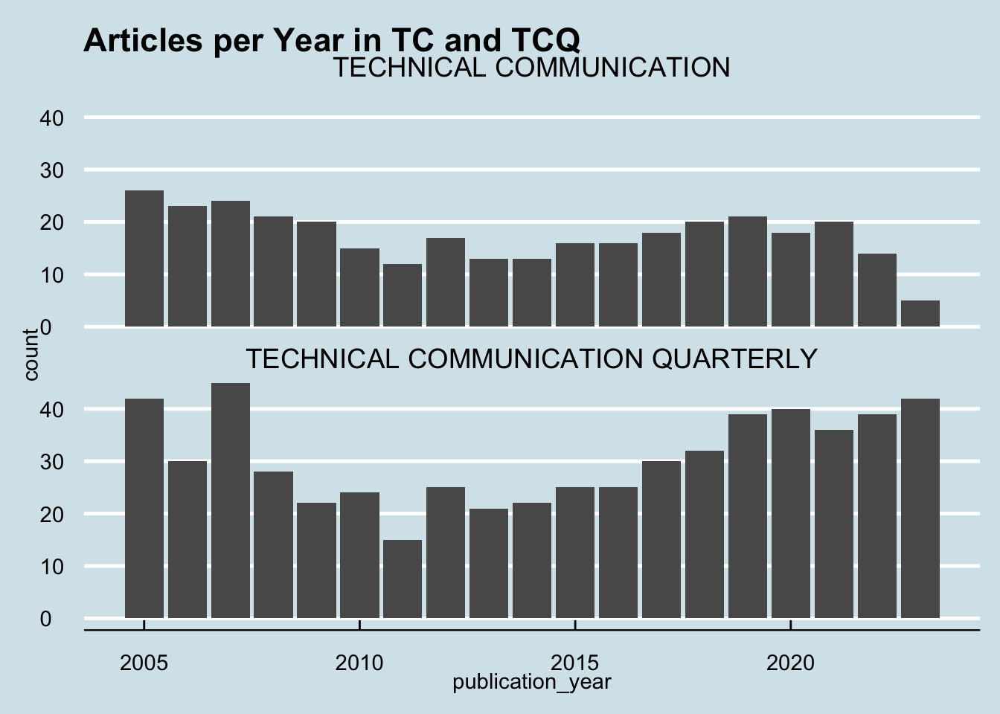
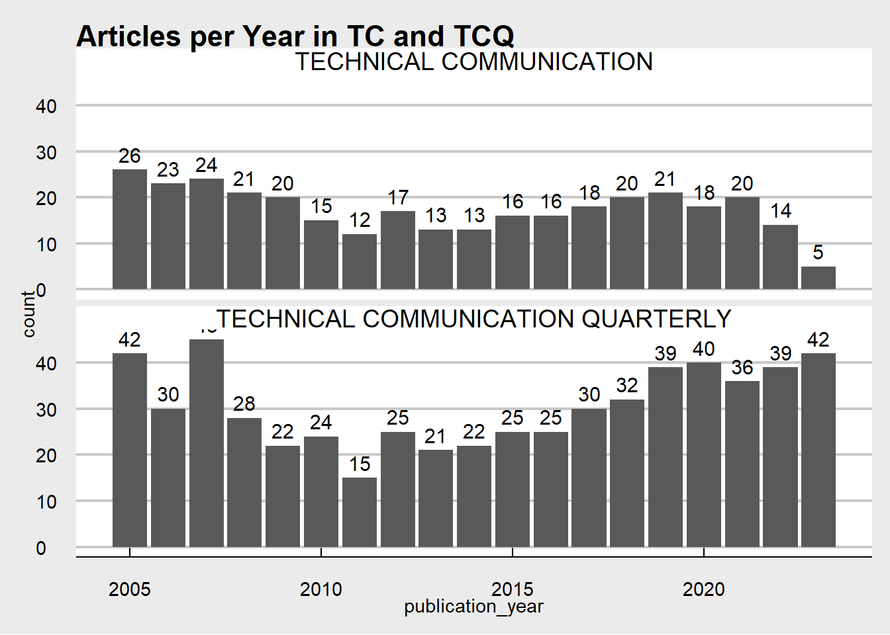

Wk 02: Exploring TC journals (pt 1)
Install packages and read in data
Our source data is split between two CSV files, one for the journal “Technical Communication Quarterly” and one for “Technical Communication.”
Data preparation
Let’s take a quick look at the data and clean up any issues. Some questions we might answer:
- How many rows and columns are in each dataset?
- What do the rows and columns correspond to?
Code
# shows dimensions (number of rows and columns)
dim(tcq_data_raw) [1] 582 22Code
dim(tc_data_raw)[1] 332 69Code
glimpse(tcq_data_raw)Rows: 582
Columns: 22
$ `Publication Type` <chr> "J", "J", "J", "J", "J", "J", "J", "J", "…
$ Authors <chr> "Fuglsby, BJ; Veeramoothoo, S", "Frost, E…
$ `Author Full Names` <chr> "Fuglsby, Brandi J.; Veeramoothoo, Saveen…
$ `Article Title` <chr> "Regulating Emotions for Social Action: E…
$ `Source Title` <chr> "TECHNICAL COMMUNICATION QUARTERLY", "TEC…
$ `Document Type` <chr> "Article", "Article", "Article", "Article…
$ Abstract <chr> "This article describes students' emotion…
$ `Cited References` <chr> "Agboka Godwin Y., 2018, CITIZENSHIP ADVO…
$ `Cited Reference Count` <dbl> 32, 86, 54, 28, 66, 22, 27, 38, 5, 20, 50…
$ `Times Cited, WoS Core` <dbl> 0, 0, 1, 7, 7, 10, 11, 8, 0, 0, 8, 0, 9, …
$ `Times Cited, All Databases` <dbl> 0, 0, 1, 7, 7, 10, 11, 8, 0, 0, 8, 0, 9, …
$ `Publication Date` <chr> "JAN 2", NA, NA, NA, NA, NA, NA, NA, NA, …
$ `Publication Year` <dbl> 2023, 2021, 2020, 2015, 2014, 2013, 2010,…
$ Volume <dbl> 32, 30, 29, 24, 23, 22, 19, 18, 14, 29, 2…
$ Issue <dbl> 1, 1, 2, 3, 3, 2, 3, 2, 1, 2, 4, 4, 1, 4,…
$ `Start Page` <chr> "98", "48", "136", "217", "184", "172", "…
$ `End Page` <chr> "113", "62", "154", "234", "206", "190", …
$ `Article Number` <dbl> NA, NA, NA, NA, NA, NA, NA, NA, NA, NA, N…
$ DOI <chr> "10.1080/10572252.2022.2079725", "10.1080…
$ `DOI Link` <chr> "http://dx.doi.org/10.1080/10572252.2022.…
$ `Early Access Date` <chr> "JUN 2022", NA, NA, NA, NA, NA, NA, NA, N…
$ `Web of Science Record` <chr> "View Full Record in Web of Science", "Vi…Code
glimpse(tc_data_raw)Rows: 332
Columns: 69
$ `Publication Type` <chr> "J", "J", "J", "J", "J", "J", "J", "J", "…
$ Authors <chr> "Britt, BC; Britt, RK", "Davis, C", "Colt…
$ `Author Full Names` <chr> "Britt, Brian C.; Britt, Rebecca K.", "Da…
$ `Book Author Full Names` <lgl> NA, NA, NA, NA, NA, NA, NA, NA, NA, NA, N…
$ `Group Authors` <lgl> NA, NA, NA, NA, NA, NA, NA, NA, NA, NA, N…
$ `Article Title` <chr> "The Roles of Medium and Narrative Believ…
$ `Source Title` <chr> "TECHNICAL COMMUNICATION", "TECHNICAL COM…
$ `Book Series Title` <lgl> NA, NA, NA, NA, NA, NA, NA, NA, NA, NA, N…
$ `Book Series Subtitle` <lgl> NA, NA, NA, NA, NA, NA, NA, NA, NA, NA, N…
$ Language <lgl> NA, NA, NA, NA, NA, NA, NA, NA, NA, NA, N…
$ `Document Type` <chr> "Article", "Article", "Article", "Article…
$ `Conference Title` <lgl> NA, NA, NA, NA, NA, NA, NA, NA, NA, NA, N…
$ `Conference Date` <lgl> NA, NA, NA, NA, NA, NA, NA, NA, NA, NA, N…
$ `Conference Location` <lgl> NA, NA, NA, NA, NA, NA, NA, NA, NA, NA, N…
$ `Conference Sponsor` <lgl> NA, NA, NA, NA, NA, NA, NA, NA, NA, NA, N…
$ `Conference Host` <lgl> NA, NA, NA, NA, NA, NA, NA, NA, NA, NA, N…
$ `Author Keywords` <lgl> NA, NA, NA, NA, NA, NA, NA, NA, NA, NA, N…
$ `Keywords Plus` <lgl> NA, NA, NA, NA, NA, NA, NA, NA, NA, NA, N…
$ Abstract <chr> "Purpose: This study investigates the rol…
$ Addresses <lgl> NA, NA, NA, NA, NA, NA, NA, NA, NA, NA, N…
$ Affiliations <lgl> NA, NA, NA, NA, NA, NA, NA, NA, NA, NA, N…
$ `Reprint Addresses` <lgl> NA, NA, NA, NA, NA, NA, NA, NA, NA, NA, N…
$ `Email Addresses` <lgl> NA, NA, NA, NA, NA, NA, NA, NA, NA, NA, N…
$ `Researcher Ids` <lgl> NA, NA, NA, NA, NA, NA, NA, NA, NA, NA, N…
$ ORCIDs <lgl> NA, NA, NA, NA, NA, NA, NA, NA, NA, NA, N…
$ `Funding Orgs` <lgl> NA, NA, NA, NA, NA, NA, NA, NA, NA, NA, N…
$ `Funding Name Preferred` <lgl> NA, NA, NA, NA, NA, NA, NA, NA, NA, NA, N…
$ `Funding Text` <lgl> NA, NA, NA, NA, NA, NA, NA, NA, NA, NA, N…
$ `Cited References` <lgl> NA, NA, NA, NA, NA, NA, NA, NA, NA, NA, N…
$ `Cited Reference Count` <dbl> 82, 24, 73, 46, 30, 28, 12, 20, 27, 24, 7…
$ `Times Cited, WoS Core` <dbl> 1, 0, 4, 10, 4, 11, 0, 2, 19, 3, 3, 3, 0,…
$ `Times Cited, All Databases` <dbl> 1, 0, 4, 10, 4, 11, 0, 2, 19, 3, 3, 3, 0,…
$ `180 Day Usage Count` <lgl> NA, NA, NA, NA, NA, NA, NA, NA, NA, NA, N…
$ `Since 2013 Usage Count` <lgl> NA, NA, NA, NA, NA, NA, NA, NA, NA, NA, N…
$ Publisher <lgl> NA, NA, NA, NA, NA, NA, NA, NA, NA, NA, N…
$ `Publisher City` <lgl> NA, NA, NA, NA, NA, NA, NA, NA, NA, NA, N…
$ `Publisher Address` <lgl> NA, NA, NA, NA, NA, NA, NA, NA, NA, NA, N…
$ ISSN <lgl> NA, NA, NA, NA, NA, NA, NA, NA, NA, NA, N…
$ eISSN <lgl> NA, NA, NA, NA, NA, NA, NA, NA, NA, NA, N…
$ ISBN <lgl> NA, NA, NA, NA, NA, NA, NA, NA, NA, NA, N…
$ `Journal Abbreviation` <lgl> NA, NA, NA, NA, NA, NA, NA, NA, NA, NA, N…
$ `Journal ISO Abbreviation` <lgl> NA, NA, NA, NA, NA, NA, NA, NA, NA, NA, N…
$ `Publication Date` <chr> "AUG", "AUG", "FEB", "AUG", "NOV", "FEB",…
$ `Publication Year` <dbl> 2021, 2019, 2019, 2018, 2014, 2012, 2011,…
$ Volume <dbl> 68, 66, 66, 65, 61, 59, 58, 54, 54, 54, 6…
$ Issue <dbl> 3, 3, 1, 3, 4, 1, 4, 4, 3, 1, 4, 3, 3, 1,…
$ `Part Number` <lgl> NA, NA, NA, NA, NA, NA, NA, NA, NA, NA, N…
$ Supplement <lgl> NA, NA, NA, NA, NA, NA, NA, NA, NA, NA, N…
$ `Special Issue` <chr> NA, NA, NA, NA, NA, NA, NA, NA, NA, NA, N…
$ `Meeting Abstract` <lgl> NA, NA, NA, NA, NA, NA, NA, NA, NA, NA, N…
$ `Start Page` <chr> "76", "272", "53", "293", "215", "1", "11…
$ `End Page` <chr> "96", "283", "67", "308", "231", "7", "13…
$ `Article Number` <lgl> NA, NA, NA, NA, NA, NA, NA, NA, NA, NA, N…
$ DOI <chr> NA, NA, NA, NA, NA, NA, NA, NA, NA, NA, N…
$ `DOI Link` <chr> NA, NA, NA, NA, NA, NA, NA, NA, NA, NA, N…
$ `Book DOI` <lgl> NA, NA, NA, NA, NA, NA, NA, NA, NA, NA, N…
$ `Early Access Date` <lgl> NA, NA, NA, NA, NA, NA, NA, NA, NA, NA, N…
$ `Number of Pages` <lgl> NA, NA, NA, NA, NA, NA, NA, NA, NA, NA, N…
$ `WoS Categories` <lgl> NA, NA, NA, NA, NA, NA, NA, NA, NA, NA, N…
$ `Web of Science Index` <lgl> NA, NA, NA, NA, NA, NA, NA, NA, NA, NA, N…
$ `Research Areas` <lgl> NA, NA, NA, NA, NA, NA, NA, NA, NA, NA, N…
$ `IDS Number` <lgl> NA, NA, NA, NA, NA, NA, NA, NA, NA, NA, N…
$ `Pubmed Id` <lgl> NA, NA, NA, NA, NA, NA, NA, NA, NA, NA, N…
$ `Open Access Designations` <lgl> NA, NA, NA, NA, NA, NA, NA, NA, NA, NA, N…
$ `Highly Cited Status` <lgl> NA, NA, NA, NA, NA, NA, NA, NA, NA, NA, N…
$ `Hot Paper Status` <lgl> NA, NA, NA, NA, NA, NA, NA, NA, NA, NA, N…
$ `Date of Export` <lgl> NA, NA, NA, NA, NA, NA, NA, NA, NA, NA, N…
$ `UT (Unique WOS ID)` <lgl> NA, NA, NA, NA, NA, NA, NA, NA, NA, NA, N…
$ `Web of Science Record` <chr> "View Full Record in Web of Science", "Vi…Cleaning names
We’ll start by cleaning up the names with the janitor package. The convention is lowercase and joined by underscores.
Code
#install.packages("janitor")
library(janitor)
# use help("library_name") for a description
help("janitor")
# Syntax method 1 (on TCQ)
tcq_data_raw <- clean_names(tcq_data_raw)
glimpse(tcq_data_raw)Rows: 582
Columns: 22
$ publication_type <chr> "J", "J", "J", "J", "J", "J", "J", "J", "J",…
$ authors <chr> "Fuglsby, BJ; Veeramoothoo, S", "Frost, EA",…
$ author_full_names <chr> "Fuglsby, Brandi J.; Veeramoothoo, Saveena (…
$ article_title <chr> "Regulating Emotions for Social Action: Emot…
$ source_title <chr> "TECHNICAL COMMUNICATION QUARTERLY", "TECHNI…
$ document_type <chr> "Article", "Article", "Article", "Article", …
$ abstract <chr> "This article describes students' emotional …
$ cited_references <chr> "Agboka Godwin Y., 2018, CITIZENSHIP ADVOCAC…
$ cited_reference_count <dbl> 32, 86, 54, 28, 66, 22, 27, 38, 5, 20, 50, 4…
$ times_cited_wo_s_core <dbl> 0, 0, 1, 7, 7, 10, 11, 8, 0, 0, 8, 0, 9, 0, …
$ times_cited_all_databases <dbl> 0, 0, 1, 7, 7, 10, 11, 8, 0, 0, 8, 0, 9, 0, …
$ publication_date <chr> "JAN 2", NA, NA, NA, NA, NA, NA, NA, NA, NA,…
$ publication_year <dbl> 2023, 2021, 2020, 2015, 2014, 2013, 2010, 20…
$ volume <dbl> 32, 30, 29, 24, 23, 22, 19, 18, 14, 29, 28, …
$ issue <dbl> 1, 1, 2, 3, 3, 2, 3, 2, 1, 2, 4, 4, 1, 4, 2,…
$ start_page <chr> "98", "48", "136", "217", "184", "172", "300…
$ end_page <chr> "113", "62", "154", "234", "206", "190", "31…
$ article_number <dbl> NA, NA, NA, NA, NA, NA, NA, NA, NA, NA, NA, …
$ doi <chr> "10.1080/10572252.2022.2079725", "10.1080/10…
$ doi_link <chr> "http://dx.doi.org/10.1080/10572252.2022.207…
$ early_access_date <chr> "JUN 2022", NA, NA, NA, NA, NA, NA, NA, NA, …
$ web_of_science_record <chr> "View Full Record in Web of Science", "View …Code
# Syntax method 2 (on TC)
tc_data_raw <- tc_data_raw %>%
clean_names()
glimpse(tc_data_raw)Rows: 332
Columns: 69
$ publication_type <chr> "J", "J", "J", "J", "J", "J", "J", "J", "J",…
$ authors <chr> "Britt, BC; Britt, RK", "Davis, C", "Colton,…
$ author_full_names <chr> "Britt, Brian C.; Britt, Rebecca K.", "Davis…
$ book_author_full_names <lgl> NA, NA, NA, NA, NA, NA, NA, NA, NA, NA, NA, …
$ group_authors <lgl> NA, NA, NA, NA, NA, NA, NA, NA, NA, NA, NA, …
$ article_title <chr> "The Roles of Medium and Narrative Believabi…
$ source_title <chr> "TECHNICAL COMMUNICATION", "TECHNICAL COMMUN…
$ book_series_title <lgl> NA, NA, NA, NA, NA, NA, NA, NA, NA, NA, NA, …
$ book_series_subtitle <lgl> NA, NA, NA, NA, NA, NA, NA, NA, NA, NA, NA, …
$ language <lgl> NA, NA, NA, NA, NA, NA, NA, NA, NA, NA, NA, …
$ document_type <chr> "Article", "Article", "Article", "Article", …
$ conference_title <lgl> NA, NA, NA, NA, NA, NA, NA, NA, NA, NA, NA, …
$ conference_date <lgl> NA, NA, NA, NA, NA, NA, NA, NA, NA, NA, NA, …
$ conference_location <lgl> NA, NA, NA, NA, NA, NA, NA, NA, NA, NA, NA, …
$ conference_sponsor <lgl> NA, NA, NA, NA, NA, NA, NA, NA, NA, NA, NA, …
$ conference_host <lgl> NA, NA, NA, NA, NA, NA, NA, NA, NA, NA, NA, …
$ author_keywords <lgl> NA, NA, NA, NA, NA, NA, NA, NA, NA, NA, NA, …
$ keywords_plus <lgl> NA, NA, NA, NA, NA, NA, NA, NA, NA, NA, NA, …
$ abstract <chr> "Purpose: This study investigates the role o…
$ addresses <lgl> NA, NA, NA, NA, NA, NA, NA, NA, NA, NA, NA, …
$ affiliations <lgl> NA, NA, NA, NA, NA, NA, NA, NA, NA, NA, NA, …
$ reprint_addresses <lgl> NA, NA, NA, NA, NA, NA, NA, NA, NA, NA, NA, …
$ email_addresses <lgl> NA, NA, NA, NA, NA, NA, NA, NA, NA, NA, NA, …
$ researcher_ids <lgl> NA, NA, NA, NA, NA, NA, NA, NA, NA, NA, NA, …
$ orci_ds <lgl> NA, NA, NA, NA, NA, NA, NA, NA, NA, NA, NA, …
$ funding_orgs <lgl> NA, NA, NA, NA, NA, NA, NA, NA, NA, NA, NA, …
$ funding_name_preferred <lgl> NA, NA, NA, NA, NA, NA, NA, NA, NA, NA, NA, …
$ funding_text <lgl> NA, NA, NA, NA, NA, NA, NA, NA, NA, NA, NA, …
$ cited_references <lgl> NA, NA, NA, NA, NA, NA, NA, NA, NA, NA, NA, …
$ cited_reference_count <dbl> 82, 24, 73, 46, 30, 28, 12, 20, 27, 24, 72, …
$ times_cited_wo_s_core <dbl> 1, 0, 4, 10, 4, 11, 0, 2, 19, 3, 3, 3, 0, 4,…
$ times_cited_all_databases <dbl> 1, 0, 4, 10, 4, 11, 0, 2, 19, 3, 3, 3, 0, 4,…
$ x180_day_usage_count <lgl> NA, NA, NA, NA, NA, NA, NA, NA, NA, NA, NA, …
$ since_2013_usage_count <lgl> NA, NA, NA, NA, NA, NA, NA, NA, NA, NA, NA, …
$ publisher <lgl> NA, NA, NA, NA, NA, NA, NA, NA, NA, NA, NA, …
$ publisher_city <lgl> NA, NA, NA, NA, NA, NA, NA, NA, NA, NA, NA, …
$ publisher_address <lgl> NA, NA, NA, NA, NA, NA, NA, NA, NA, NA, NA, …
$ issn <lgl> NA, NA, NA, NA, NA, NA, NA, NA, NA, NA, NA, …
$ e_issn <lgl> NA, NA, NA, NA, NA, NA, NA, NA, NA, NA, NA, …
$ isbn <lgl> NA, NA, NA, NA, NA, NA, NA, NA, NA, NA, NA, …
$ journal_abbreviation <lgl> NA, NA, NA, NA, NA, NA, NA, NA, NA, NA, NA, …
$ journal_iso_abbreviation <lgl> NA, NA, NA, NA, NA, NA, NA, NA, NA, NA, NA, …
$ publication_date <chr> "AUG", "AUG", "FEB", "AUG", "NOV", "FEB", "N…
$ publication_year <dbl> 2021, 2019, 2019, 2018, 2014, 2012, 2011, 20…
$ volume <dbl> 68, 66, 66, 65, 61, 59, 58, 54, 54, 54, 68, …
$ issue <dbl> 3, 3, 1, 3, 4, 1, 4, 4, 3, 1, 4, 3, 3, 1, 2,…
$ part_number <lgl> NA, NA, NA, NA, NA, NA, NA, NA, NA, NA, NA, …
$ supplement <lgl> NA, NA, NA, NA, NA, NA, NA, NA, NA, NA, NA, …
$ special_issue <chr> NA, NA, NA, NA, NA, NA, NA, NA, NA, NA, NA, …
$ meeting_abstract <lgl> NA, NA, NA, NA, NA, NA, NA, NA, NA, NA, NA, …
$ start_page <chr> "76", "272", "53", "293", "215", "1", "11", …
$ end_page <chr> "96", "283", "67", "308", "231", "7", "13", …
$ article_number <lgl> NA, NA, NA, NA, NA, NA, NA, NA, NA, NA, NA, …
$ doi <chr> NA, NA, NA, NA, NA, NA, NA, NA, NA, NA, NA, …
$ doi_link <chr> NA, NA, NA, NA, NA, NA, NA, NA, NA, NA, NA, …
$ book_doi <lgl> NA, NA, NA, NA, NA, NA, NA, NA, NA, NA, NA, …
$ early_access_date <lgl> NA, NA, NA, NA, NA, NA, NA, NA, NA, NA, NA, …
$ number_of_pages <lgl> NA, NA, NA, NA, NA, NA, NA, NA, NA, NA, NA, …
$ wo_s_categories <lgl> NA, NA, NA, NA, NA, NA, NA, NA, NA, NA, NA, …
$ web_of_science_index <lgl> NA, NA, NA, NA, NA, NA, NA, NA, NA, NA, NA, …
$ research_areas <lgl> NA, NA, NA, NA, NA, NA, NA, NA, NA, NA, NA, …
$ ids_number <lgl> NA, NA, NA, NA, NA, NA, NA, NA, NA, NA, NA, …
$ pubmed_id <lgl> NA, NA, NA, NA, NA, NA, NA, NA, NA, NA, NA, …
$ open_access_designations <lgl> NA, NA, NA, NA, NA, NA, NA, NA, NA, NA, NA, …
$ highly_cited_status <lgl> NA, NA, NA, NA, NA, NA, NA, NA, NA, NA, NA, …
$ hot_paper_status <lgl> NA, NA, NA, NA, NA, NA, NA, NA, NA, NA, NA, …
$ date_of_export <lgl> NA, NA, NA, NA, NA, NA, NA, NA, NA, NA, NA, …
$ ut_unique_wos_id <lgl> NA, NA, NA, NA, NA, NA, NA, NA, NA, NA, NA, …
$ web_of_science_record <chr> "View Full Record in Web of Science", "View …Select columns of interest
Now we’ll use a function from a library called dplyr to retain only the columns we want. Let’s keep:
- author_full_names
- article_title
- source_title
- abstract
- cited_references
- cited_reference_count
- publication_year
- publication_type
First on TCQ
Code
Rows: 582
Columns: 8
$ author_full_names <chr> "Fuglsby, Brandi J.; Veeramoothoo, Saveena (Chak…
$ article_title <chr> "Regulating Emotions for Social Action: Emotiona…
$ source_title <chr> "TECHNICAL COMMUNICATION QUARTERLY", "TECHNICAL …
$ abstract <chr> "This article describes students' emotional inte…
$ cited_references <chr> "Agboka Godwin Y., 2018, CITIZENSHIP ADVOCACY; […
$ cited_reference_count <dbl> 32, 86, 54, 28, 66, 22, 27, 38, 5, 20, 50, 4, 55…
$ publication_year <dbl> 2023, 2021, 2020, 2015, 2014, 2013, 2010, 2009, …
$ publication_type <chr> "J", "J", "J", "J", "J", "J", "J", "J", "J", "J"…Now on TC
Code
Rows: 332
Columns: 8
$ author_full_names <chr> "Britt, Brian C.; Britt, Rebecca K.", "Davis, Ca…
$ article_title <chr> "The Roles of Medium and Narrative Believability…
$ source_title <chr> "TECHNICAL COMMUNICATION", "TECHNICAL COMMUNICAT…
$ abstract <chr> "Purpose: This study investigates the role of ne…
$ cited_references <lgl> NA, NA, NA, NA, NA, NA, NA, NA, NA, NA, NA, NA, …
$ cited_reference_count <dbl> 82, 24, 73, 46, 30, 28, 12, 20, 27, 24, 72, 34, …
$ publication_year <dbl> 2021, 2019, 2019, 2018, 2014, 2012, 2011, 2007, …
$ publication_type <chr> "J", "J", "J", "J", "J", "J", "J", "J", "J", "J"…Combine the two sets
Exploring the data
Some quick ways to examine at a high level
Code
# provides overview of numeric variables
summary(both_data) author_full_names article_title source_title abstract
Length:914 Length:914 Length:914 Length:914
Class :character Class :character Class :character Class :character
Mode :character Mode :character Mode :character Mode :character
cited_references cited_reference_count publication_year publication_type
Length:914 Min. : 0.00 Min. :2005 Length:914
Class :character 1st Qu.: 18.00 1st Qu.:2008 Class :character
Mode :character Median : 34.00 Median :2014 Mode :character
Mean : 35.59 Mean :2014
3rd Qu.: 51.00 3rd Qu.:2019
Max. :169.00 Max. :2023 Code
# overview of target column
summary(both_data$publication_year) Min. 1st Qu. Median Mean 3rd Qu. Max.
2005 2008 2014 2014 2019 2023 Code
# for each column, shows data types and first few observations
str(both_data) tibble [914 × 8] (S3: tbl_df/tbl/data.frame)
$ author_full_names : chr [1:914] "Fuglsby, Brandi J.; Veeramoothoo, Saveena (Chakrika)" "Frost, Erin A." "Weber, Ryan" "Kreuter, Nate" ...
$ article_title : chr [1:914] "Regulating Emotions for Social Action: Emotional Intelligence's Role in TPC" "Ultrasound, Gender, and Consent: An Apparent Feminist Analysis of Medical Imaging Rhetorics" "The News from Mars" "The US Intelligence Community's Mathematical Ideology of Technical Communication" ...
$ source_title : chr [1:914] "TECHNICAL COMMUNICATION QUARTERLY" "TECHNICAL COMMUNICATION QUARTERLY" "TECHNICAL COMMUNICATION QUARTERLY" "TECHNICAL COMMUNICATION QUARTERLY" ...
$ abstract : chr [1:914] "This article describes students' emotional intelligence (EI) development when participating in the Trans-Atlant"| __truncated__ "This article uses an apparent feminist approach to engage a two-part research question: First, does gender affe"| __truncated__ "Bruno Latour advocates for portrayals of science in the making but does not explain how the public can access t"| __truncated__ "Reading historical intelligence community documents primarily through the lens of Kenneth Burke's essay ''Seman"| __truncated__ ...
$ cited_references : chr [1:914] "Agboka Godwin Y., 2018, CITIZENSHIP ADVOCACY; [Anonymous], 2007, SOCIAL JUSTICE THEOR; [Anonymous], 2020, T ATL"| __truncated__ "American Cancer Society, 2019, REC PROST CANC EARL; American College of Obstetricians and Gynecologists, 2019, "| __truncated__ "[Anonymous], 2007, J TECH WRIT COMMUN, DOI DOI 10.2190/TW.37.3.C; [Anonymous], 2001, WHAT SHOULD WE TEACH; [Ano"| __truncated__ "[Anonymous], 2005, REP PRES US; Barnard I, 2010, COLL COMPOS COMMUN, V61, P434; Best J., 2001, DAMNED LIES STAT"| __truncated__ ...
$ cited_reference_count: num [1:914] 32 86 54 28 66 22 27 38 5 20 ...
$ publication_year : num [1:914] 2023 2021 2020 2015 2014 ...
$ publication_type : chr [1:914] "J" "J" "J" "J" ...Code
# shows first few rows
head(both_data)# A tibble: 6 × 8
author_full_names article_title source_title abstract cited_references
<chr> <chr> <chr> <chr> <chr>
1 Fuglsby, Brandi J.; Veer… Regulating E… TECHNICAL C… This ar… Agboka Godwin Y…
2 Frost, Erin A. Ultrasound, … TECHNICAL C… This ar… American Cancer…
3 Weber, Ryan The News fro… TECHNICAL C… Bruno L… [Anonymous], 20…
4 Kreuter, Nate The US Intel… TECHNICAL C… Reading… [Anonymous], 20…
5 Buehl, Jonathan Toward an Et… TECHNICAL C… Over th… ANDERSON C, 199…
6 Lauer, Claire Examining th… TECHNICAL C… This ar… [Anonymous], SE…
# ℹ 3 more variables: cited_reference_count <dbl>, publication_year <dbl>,
# publication_type <chr>Code
# shows the first n rows
head(both_data, n = 10)# A tibble: 10 × 8
author_full_names article_title source_title abstract cited_references
<chr> <chr> <chr> <chr> <chr>
1 Fuglsby, Brandi J.; Vee… Regulating E… TECHNICAL C… This ar… Agboka Godwin Y…
2 Frost, Erin A. Ultrasound, … TECHNICAL C… This ar… American Cancer…
3 Weber, Ryan The News fro… TECHNICAL C… Bruno L… [Anonymous], 20…
4 Kreuter, Nate The US Intel… TECHNICAL C… Reading… [Anonymous], 20…
5 Buehl, Jonathan Toward an Et… TECHNICAL C… Over th… ANDERSON C, 199…
6 Lauer, Claire Examining th… TECHNICAL C… This ar… [Anonymous], SE…
7 Ding, Huiling Technical Co… TECHNICAL C… In this… [Anonymous], 20…
8 Kynell, Teresa; Tebeaux… The Associat… TECHNICAL C… This ar… Anderson P., 19…
9 Kitalong, Karla Saari Working with… TECHNICAL C… <NA> ALLEN N, 2002, …
10 Pihlaja, Beau Rhetoric, Te… TECHNICAL C… <NA> Agboka Godwin, …
# ℹ 3 more variables: cited_reference_count <dbl>, publication_year <dbl>,
# publication_type <chr>Code
#shows last few rows
tail(both_data)# A tibble: 6 × 8
author_full_names article_title source_title abstract cited_references
<chr> <chr> <chr> <chr> <chr>
1 Wagner, Christian; Schro… Capabilities… TECHNICAL C… Purpose… <NA>
2 Lentz, Leo; De Jong, Men… How Do Exper… TECHNICAL C… Discuss… <NA>
3 Rife, Martine Courant Technical co… TECHNICAL C… Maintai… <NA>
4 Mott, Richard K.; Ford, … The converge… TECHNICAL C… States … <NA>
5 Thrush, Emily A.; Hooper… Industry and… TECHNICAL C… Details… <NA>
6 Theofanos, MF; Redish, J Helping low-… TECHNICAL C… This is… <NA>
# ℹ 3 more variables: cited_reference_count <dbl>, publication_year <dbl>,
# publication_type <chr>Code
# creates a frequency table for a categorical variable
table(both_data$publication_year)
2005 2006 2007 2008 2009 2010 2011 2012 2013 2014 2015 2016 2017 2018 2019 2020
68 53 69 49 42 39 27 42 34 35 41 41 48 52 60 58
2021 2022 2023
56 53 47 Visualize
Let’s create some exploratory visualizations.
Visualize the articles published by year
Code
# count of articles by year
ggplot(both_data, aes(x = publication_year)) +
geom_bar() +
labs(title = "Articles per Year in TC and TCQ",
X = "Publication Year",
Y = "Number of Articles") +
theme_light()
Add another variable to the display
Code
# count of articles by year, by journal
ggplot(both_data, aes(x = publication_year, fill = source_title)) +
geom_bar() +
labs(title = "Articles per Year in TC and TCQ",
X = "Publication Year",
Y = "Number of Articles") +
theme_light()
Create two displays using facet wrap
Code
# count of articles by year, by journal
ggplot(both_data, aes(x = publication_year)) +
geom_bar() +
labs(title = "Articles per Year in TC and TCQ",
X = "Publication Year",
Y = "Number of Articles") +
facet_wrap(~ source_title, ncol = 2) # Change ncol as needed
Spice things up with a theme from ggthemes
Check out this ggthemes gallery
Code
#install.packages("ggthemes")
library(ggthemes)
# count of articles by year, by journal
ggplot(both_data, aes(x = publication_year)) +
geom_bar() +
labs(title = "Articles per Year in TC and TCQ",
X = "Publication Year",
Y = "Number of Articles") +
facet_wrap(~ source_title, ncol = 1) +
theme_economist()
Code
# count of articles by year, by journal
year_plot <- ggplot(both_data, aes(x = publication_year)) +
geom_bar() +
labs(title = "Articles per Year in TC and TCQ",
X = "Publication Year",
Y = "Number of Articles") +
facet_wrap(~ source_title, ncol = 1) +
theme_economist_white()
year_plot
Add labels above the bars
Code
# add labels above the bars
year_plot <- year_plot +
geom_text(stat = 'count', aes(label = after_stat(count)), vjust = -0.5, size = 4)
year_plot
Save the chart
Save our dataset
What about other journals?
Gather and add to our visuals all articles published after 2005 from Web of Science in these journals:
- Journal of Business and Technical Communication
- Written Communication